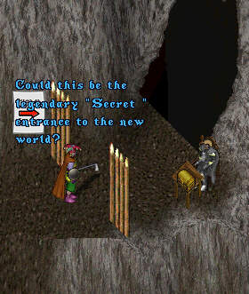
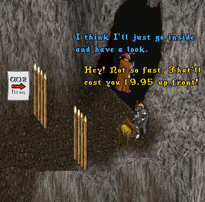
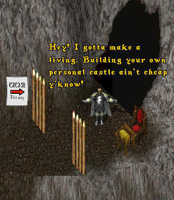
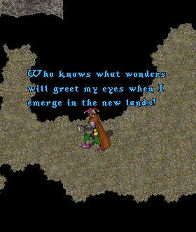
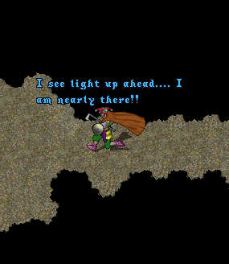
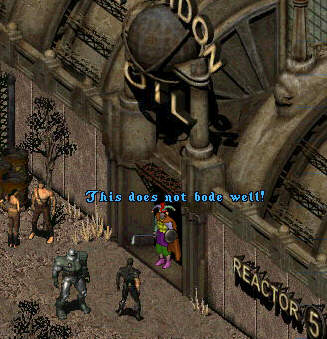

Episode 40: ImaNewbie sets out to explore the new "Second Age" of UO he has been hearing so much about. As luck would have it he finds the secret entrance, and none other than the legendary Lord British.





